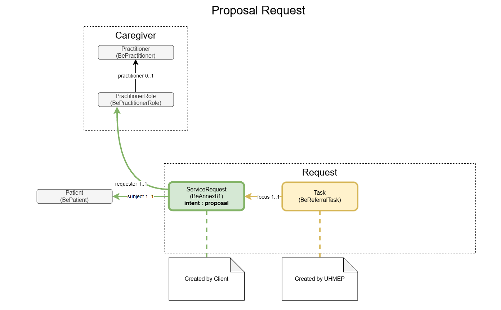
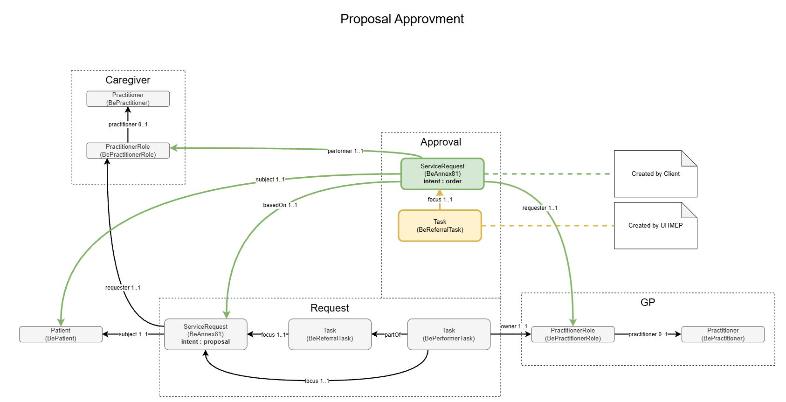
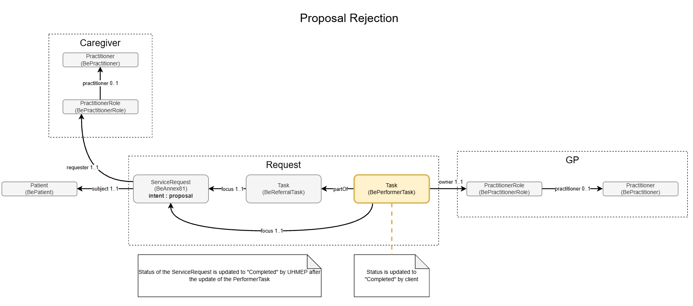

eReferral Implementation Guide
3.0.0 -

eReferral Implementation Guide
3.0.0 -

eReferral Implementation Guide - Local Development build (v3.0.0) built by the FHIR (HL7® FHIR® Standard) Build Tools. See the Directory of published versions
This page describes the life cycle used for Annex 81 proposals, including how a proposal is assigned and how it is approved or rejected.
The workflow is based on a separation between:
ServiceRequest)Task resources)| Resource | Role |
|---|---|
| ServiceRequest (Annex81) | Represents the proposal and later the approved order. |
| BeReferralTask (Task) | Tracks the overall processing of the proposal. |
| BePerformerTask (Task) | Tracks the assignment and handling of the proposal by a specific healthcare professional (e.g. GP). |
| Patient | Subject of the proposal. |
| PractitionerRole / Practitioner | Represents the caregiver(s) involved. |

A client system creates an Annex 81 proposal as a ServiceRequest with:
ServiceRequest.intent = proposalServiceRequest.subject referencing the PatientServiceRequest.requester referencing the proposing caregiver (PractitionerRole)After the proposal is created, eReferral creates the corresponding BeReferralTask to track the lifecycle of the proposal.
The ReferralTask references the proposal using:
Task.focus → ServiceRequestThis ensures the workflow can evolve without changing the original clinical request structure.

When a caregiver (e.g. GP) is assigned to handle the proposal, the client creates a BePerformerTask:
BePerformerTask.partOf → BeReferralTaskBePerformerTask.focus → the same ServiceRequest (proposal)BePerformerTask.owner → assigned PractitionerRoleThis assignment task represents who is responsible for reviewing/processing the proposal.

Approving a proposal is not just a status update. It produces a new “approved request” state.
The API provides the dedicated Evaluate Proposal operation
(POST /ServiceRequest/{serviceRequestID}/$approve).
When approval is performed:
BePerformerTask is completed;Using the operation ensures the server can apply all workflow rules atomically and keep the resources consistent.

Rejecting a proposal is also a business transaction and must:
The API provides the same dedicated Evaluate Proposal operation
(POST /ServiceRequest/{serviceRequestID}/$reject).
When rejection is performed:
BePerformerTask is updated to reflect the rejection;Approval and rejection affect multiple resources (ServiceRequest, BeReferralTask, BePerformerTask) and must enforce workflow constraints.
Using operations instead of client-driven PATCH updates:
This ensures all systems interacting with eReferral follow the same workflow semantics, while clients only need to invoke a clear domain action (approve or reject).
IG © 2026+ Riziv-Inami Platform.
Package inami.fhir.be.ereferral#3.0.0 based on FHIR 4.0.1.
Generated 2026-10-28